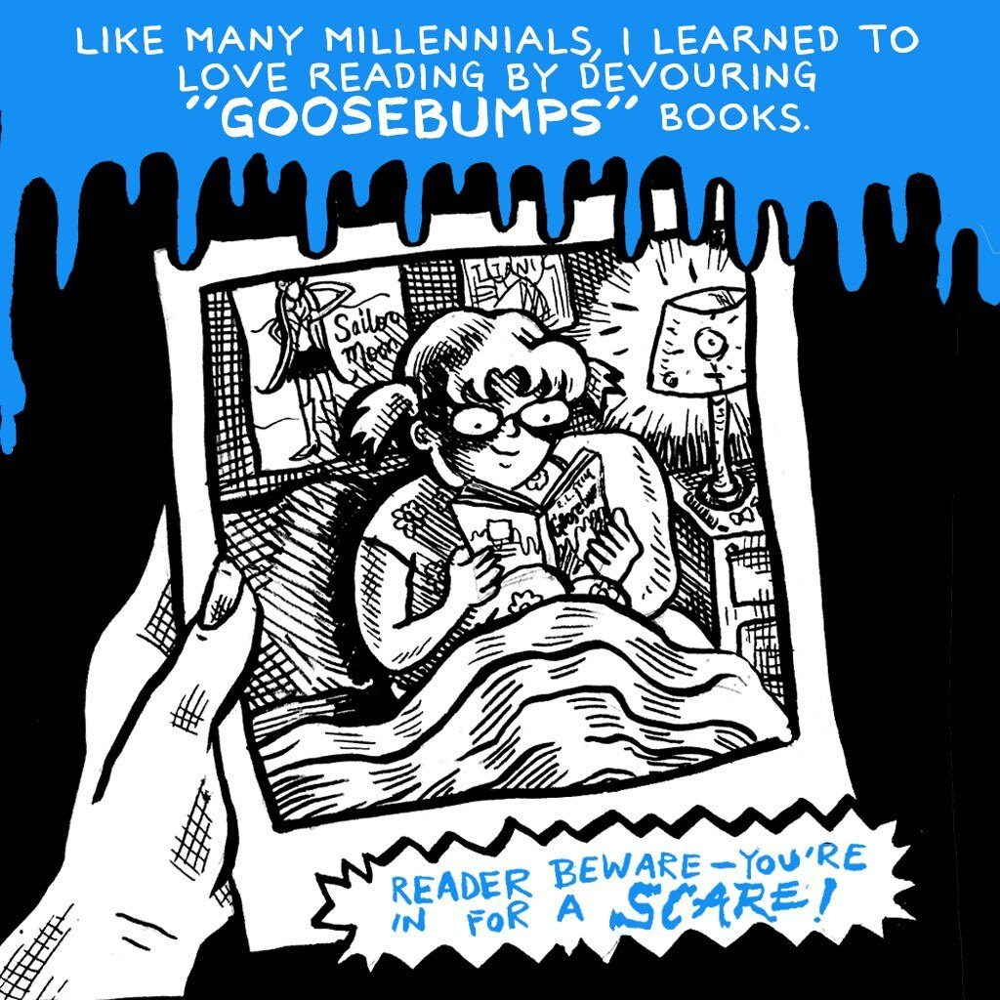

← back to comics journalism
the lily · 4 panels
The Haunted Mask, and learning to love reading
On growing up inside R. L. Stine’s Goosebumps, and the one that stuck.


![Five hand-drawn 'Goosebumps' paperback covers scattered across a black background under a dripping-slime border, their logos lettered in bright blue over R.L. Stine's name. Visible covers include a snarling green mask labeled 'THE HAUNTED MASK,' a gaunt staring face over the number '1/2' for 'THE CURSE OF CAMP COLD LAKE,' a hand reaching through boards for 'STAY OUT OF THE BA—,' a wide-eyed ventriloquist dummy for '— OF THE LIVING —,' and one lettered 'WELCOME TO DEAD HOUSE.' The blue caption bar reads 'R.L. STINE'S HORROR SERIES FOR YOUNGER READERS OFFERED A BALANCED MIX OF MALE AND FEMALE PROTAGONISTS — IN ADDITION TO TWIST ENDINGS AND SPECTACULARLY SPOOKY COVER ART.'](comics/lily-goosebumps-03.jpg)
![A wide-eyed girl with long pale hair claps a hand to her cheek in shock as she opens a sandwich and finds a fat blue worm between the bread slices; her balloon reads 'OH! IT'S A WORM!' Behind her two grinning boys point and laugh, one saying 'GOTCHA!', with blue 'HA!' sounds floating around them under a dripping-slime border. The blue caption bar reads 'MY FAVORITE WAS "THE HAUNTED MASK," THE 11TH "GOOSEBUMPS" BOOK. ELEVEN-YEAR-OLD CARLY BETH IS TORMENTED BY BULLIES WHO LIKE TO SCARE HER. THEY EVEN PUT A WORM IN HER SANDWICH!'](comics/lily-goosebumps-04.jpg)
Originally published by The Lily. Republished here by the author, who holds the rights. Every panel carries a description for screen readers.
open to communications, content and editorial roles
Let’s talk.
If you have something complicated that has to land with people who are not paid to care, that is the work I want.